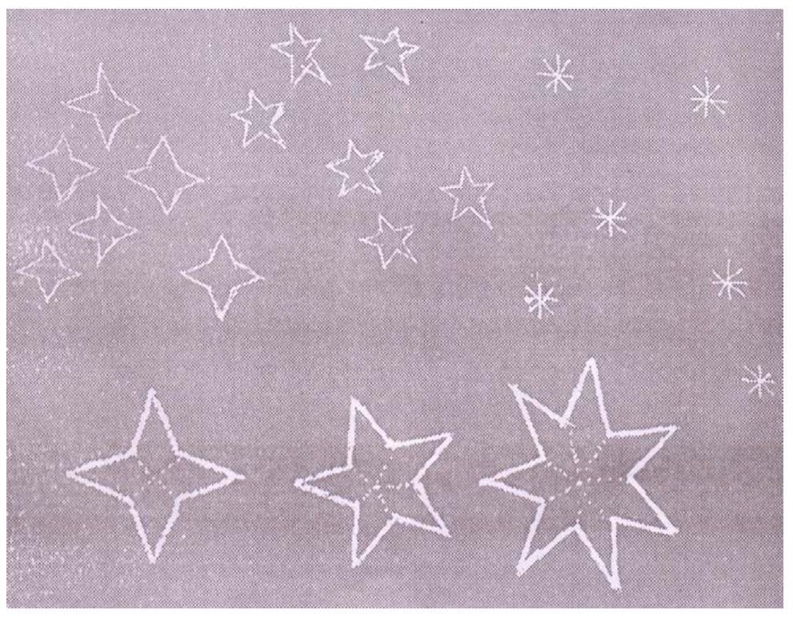

Materi
Motif Kain Sasirangan
Bayam Raja

Bayam diketahui memiliki kandungan vitamin tertentu dapat berpengaruh terhadap kesehatan dan daya tahan seseorang. Beberapa jenis bayam yang dikenali seperti bayam putih, bayam habang (maksudnya batangnya berwarna merah) dan ada sejenis bayam yang baik batang dan daunnya lebih besar (lebar) yang disebut bayam raja, banyak dikonsumsi masyarakat di Kalimantan Selatan khususnya.
Bintang
Motif ini memiliki makna bahwa bintang merupakan salah satu tanda kebesaran dari Tuhan Yang Maha Kuasa dan kita sebagai manusia yaitu umatnya tidak akan sanggup untuk menghitung jumlah bintang yang ada di alam semesta ini.
Daun Jaruju

Jaruju adalah tumbuhan rawa, batannya berduri. Ujung daunnya runcing lengkap dengan tulang daun di bagian tengahnya, helai daun berbentuk artistic, berhias beberapa sudut yang juga meruncing, melambangkan makna selemah apapun penampilan tetap saja mempunyai makna. Baga masyarakat Kalsel Motif sasirangan daun jaruju bermakna sebagai simbol penolak bala. Makna Motif Daun Jaruju juga adalah perlambangan kesejatian diri pemakainya yang menyimpan makna penuh kearifan.
Daun Katu

Motif Daun Katu memiliki daun yang berganda, dengan warna hijau tua. Pucuk daun katu sering dijadikan sayur untuk makan nasi. Menurut pengalaman ibu-ibu yang menyusui anaknya, sayur daun katu dapat memperbanyak ASI, sehingga bernilai manfaat.
Hiring Gagatas

Motif Hiris gagatas disebut juga rincung gagatas yang bermakna bungas, langkar, atau cantik. Dinamakan hiris gagatas oleh karena wadai (kue) khas Kalimantan Selatan yang dinamakan gagatas diiris (dipotong) seperti bentuk wajik. Iris gagatas ini sangat umum didaerah Kalimantan Selatan. Semua wadai (kue) khas Kalimantan Selatan seperti amparan tatak, sarimuka, kakaraban, sari pengantin, kuih lapis dan yang lainya selalu dupotong dalam bentuk hiris gagatas ini.
Gigi Haruan

Motif sasirangan Gigi Haruan diambil dari ikan yang merupakan makanan kegemaran orang Banjar yaitu Iwak Haruan atau Ikan Gabus. Ikan haruan berwarna hitam dengan gigi- gigi runcing dan tajam. Makna Motif dari gigi haruan tersebutlah diambil filosofi kehidupan yang bermakna ketajaman berpikir.
Hiris pudak

Pudak yang disebut juga pandan, adalah tanaman sekitar rumah tangga, yang daunnya berbau harum. Bentuk daunnya agak panjang dan ramping yang mempunyai banyak kegunaan.
Kambang Kacang

Kacang panjang adalah sejenis sayuran, batangnya menjalar ke tiang penyangga. sebagai tumpu tegak ketanaman. tangkai-tangkai daun yang di awal-awalnya polos tanpa helai daun, atau kelatangkai-tangkai tempat bergantung buah sebelum merambat senantiasa bertumbuh ke atas. Bunga-bunga bermunculan di sela ketiak daun. Penampilang Kambang Kacang (bunga kacang) yang tidak saja terlihat indah untuk dipandang mata, juga ada makna janji yang dikandungnya. Penampilan yang demikian melambangkan kesederhanaan tapi penuh kepastian.
Kambang Sasaki

Motif Kambang sekuntum bunga sebagai lambang keindahan banyak dipergunakan dalam ornamen khas Kalimantan Selatan, seperti ukiran arsitektur rumah adat Kalimantan Selatan, pada dinding airguci dan relief tempat kapur sirih yang disebut panginangan.
Kulat Karitik

Kulat sama dengan jamur atau cendawa. Kulat Karikit adalah nama lokal yang diberikan masyarakat Banjar terhadap tumbuhan jenis cendawa yang tumbuh di musim hujan pada batang pohon karena yang besar yang telah lama tumbuh di hutan. Cendawa tersebut berwarna putih kusam, bentuknya besar sebesar mata uang logam. Oleh penduduk, kulat karikit dimanfaatkan sebagai sayur lauk makan. Makananya adalah penampilan sederhana, hadir tidak setiap waktu namun mendatangkan manfaat bagi makhluk lainnya.
Mayang Murai

Peranan mayang pinang sangat penting dalam acara badudus, suatu adat orang Kalimantan Selatan sejak jaman dahulu. Mayang marai setelah dicelupkan ke dalam air yang bertabur macam-macam kembang disiramkan ketubuh seseorang yang dimandikan sejak dari atas kepala hingga sekujur badan wanita, terutama kedua orang mempelai yang akan bersanding.
Naga Balimbur

Naga Balimbur dapat diartikan sebagai seekor binatang naga yang berenang antara timbul dan tenggelam di suatu perairan yang luas dan dalam. Motif Naga Balimbur diperkirakan banyak dipakai di kalangan petinggi istana khususnya golongan kesatria.
Ombak Sinampur Karang

Motif kain sasirangan sinampur karang memiliki arti ombak yang menerjang sebuah karang dan dimaknai sebagai gelombang perjuangan di dalam hidup manusia
Tampuk Manggis

Motif tampuk manggis sebenarnya lebih mengacu pada helai pelindung buah yang terdiri dari lima sudut tumbul yang melekat menyatu dengan tangkai buah. Susunan simetris Warnanya yang agak muda dan kebanyakan sangat kontras dengan warna buahnya yang berwarna gelap.
Ular Lidi

Motif sasirangan Ular Lidi diambil dari dongeng orang Banjar dan dianggap sebagai simbol kecerdikan. Hal ini dikarenakan karena ular lidi yang kecil dan gagah tersebut cerdik tapi juga berbisa. Bentuk motif ini mirip hiris pudak, berganda dan tidak patah-patah, akan tetapi melengkung vertikal serta bervariasi.